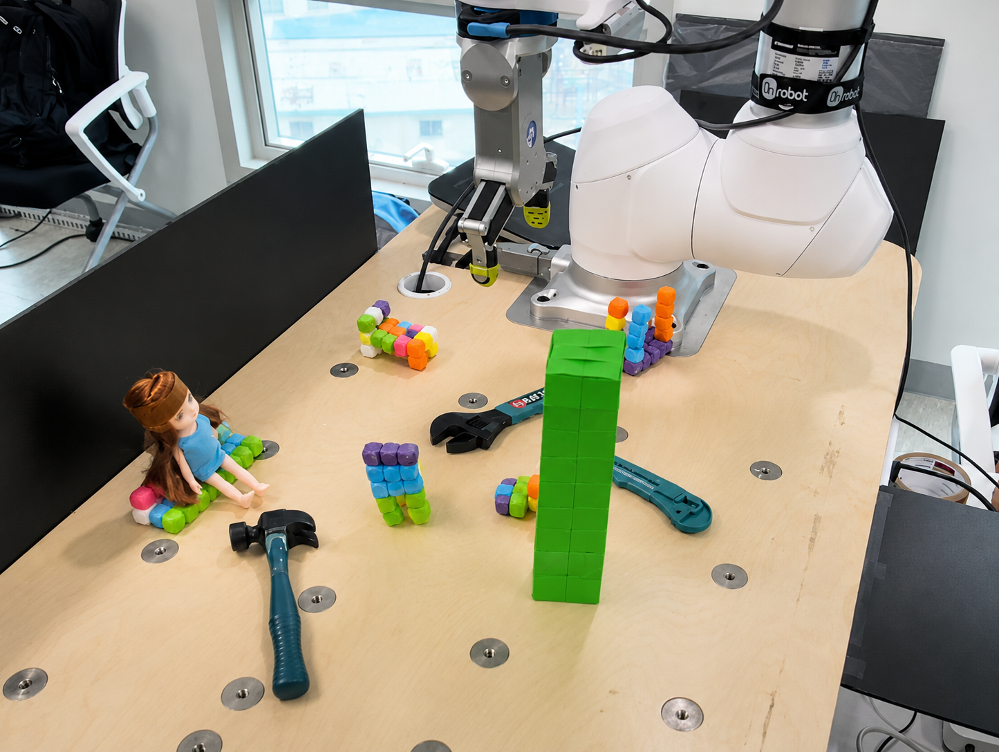
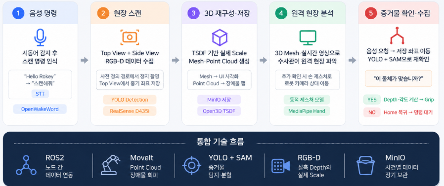
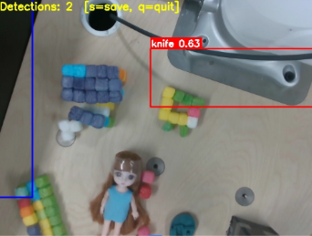
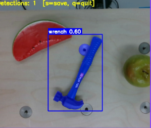
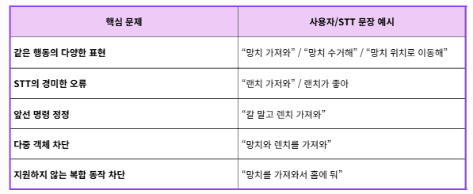
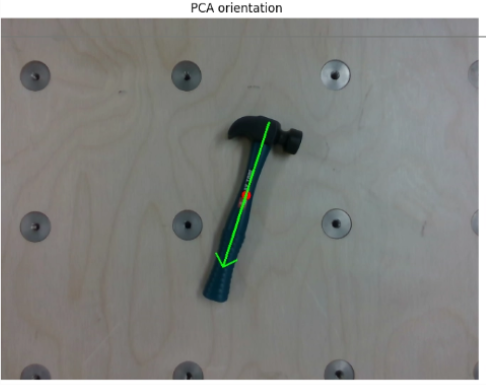
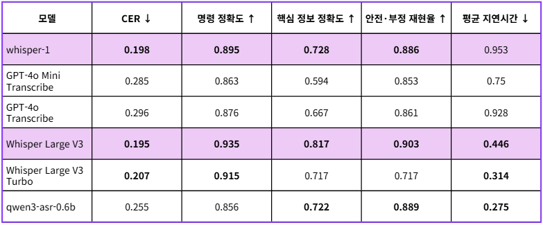
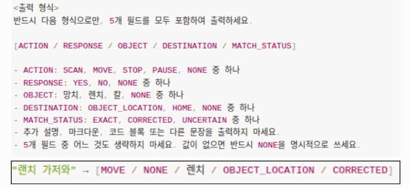
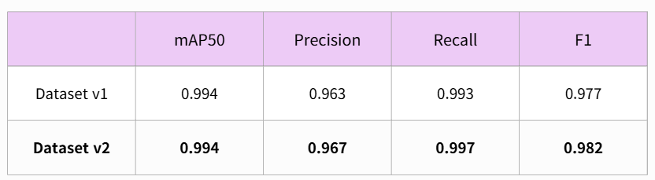

PROJECT TITLE
범죄 현장 AI 기반 증거물 탐지·음성 명령·로봇 수집 시스템
Overview


범죄 현장에서 사람이 직접 증거물을 탐색·수집할 때 발생할 수 있는 현장 훼손과 증거 오염을 줄이기 위해, 음성 명령 → 객체 탐지 → 위치·방향 추정 → 로봇 수집으로 이어지는 End-to-End AI-Robotics 시스템을 구현했습니다.
Vision에서는 객체 탐지 결과를 Robot Grasp에 필요한 x, y, z, θ 정보로 확장하고, STT에서는 자연어 명령을 Robot Control이 실행할 수 있는 Structured Command로 변환하는 Pipeline을 구축했습니다.
Problem
Vision에서는 객체 인식을 Robot Grasp가 가능한 위치·방향 정보로 변환하고, STT에서는 자연어를 Robot Control이 실행 가능한 구조화된 명령으로 변환해야 했습니다.
Analyze
Vision


Baseline YOLO 모델을 실제 환경에서 테스트한 결과 다음 문제를 확인했습니다.
- Wrench 클래스의 상대적인 Detection 성능 저하
- 뒤집힌 Hammer를 Wrench로 오인식
- Background에서 False Positive 발생
- Mosaic Augmentation 과정에서 객체 일부가 잘린 이미지 생성
오류 케이스를 분석한 결과, 모델 구조보다 클래스별 데이터 분포, Background 데이터 부족, Augmentation 방식이 주요 개선 포인트라고 판단했습니다.
또한 Bounding Box는 객체의 대략적인 위치만 제공하므로, Knife처럼 길고 방향성이 있는 객체의 파지 위치와 각도(θ)를 추정하는 데 한계가 있었습니다. 이를 해결하기 위해 Segmentation Mask로 객체의 형태와 주축 방향을 추정하고, Depth를 결합해 3D 위치(x, y, z)를 산출하는 Grasp Pose Estimation Pipeline이 필요하다고 판단했습니다.
STT

일반적인 STT 평가에서는 CER과 같은 전사 정확도를 주로 사용하지만, 로봇 환경에서는 사용자의 발화를 최대한 정확하게 보존하는 것과 함께 행동에 필요한 핵심 정보가 유지되는지도 중요하다고 판단했습니다.
따라서 STT 모델은 원문 보존을 기본 목표로 두고, CER과 함께 Action, Object, Destination, Negation 등 핵심 정보의 보존 여부를 추가로 평가했습니다.
이후 LLM 단계에서는 STT 결과를 기반으로 동일 행동의 다양한 표현과 일부 인식 오류를 보정하고, 명령 정정·다중 객체·복합 명령 등을 검증하여 로봇이 실행할 수 있는 Structured Command로 정확하게 파싱하는 것을 목표로 했습니다.
Action
1. Object Detection Dataset Improvement
Baseline 모델의 실패 케이스를 기준으로 학습 데이터를 재구성했습니다.
- Dataset 222장 → 294장으로 확대
- 부족했던 Wrench 클래스 데이터 보강
- 객체가 존재하지 않는 Background 이미지 50장 추가
- Mosaic 과정에서 객체가 잘리는 문제를 확인하고 Close Mosaic 조건 조정
실패 케이스 중심으로 데이터셋을 고도화해 클래스 혼동과 Background False Positive를 개선했습니다.
2. Grasp Pose Estimation

Detection 결과를 실제 Robot Grasp 정보로 변환하기 위해 다음 Vision Pipeline을 구성했습니다.
YOLO Detection → Segmentation → PCA / Depth → x, y, z, θ
- Segmentation으로 객체의 실제 영역 추출
- Segmentation Mask에 PCA를 적용해 객체의 주축과 파지 방향 θ 계산
- RGB-D Camera의 Depth를 결합해 객체의 x, y, z 위치 계산
이를 통해 Bounding Box 수준의 Detection 결과를 Robot Grasp에 활용 가능한 3D 위치·방향 정보로 확장했습니다.
3. STT Evaluation & Model Selection

실제 Robot Command 30개를 기준으로 평가 데이터셋을 구축하고 다음 6개 STT 모델을 동일한 조건에서 비교했습니다.
- Whisper-1
- GPT-4o Mini Transcribe
- GPT-4o Transcribe
- Whisper Large V3
- Whisper Large V3 Turbo
- Qwen3-ASR-0.6B
CER 외에도 Robot Command 관점에서 다음 지표를 정의했습니다.
- Command Accuracy
- Key Information Accuracy
- Safety & Negation Recall
- Average Latency
정량 평가에서는 Whisper Large V3가 가장 높은 성능을 보였지만, Vision 모델과의 동시 구동 환경에서 리소스와 시스템 안정성을 함께 검토해 최종 통합 모델로 Whisper-1을 선정했습니다.
4. Command Parsing & System Integration

STT 결과를 그대로 Robot Control에 전달하지 않고, LLM을 활용해 다음 Schema로 구조화했습니다.
ACTION / RESPONSE / OBJECT / DESTINATION / MATCH_STATUS
실제 명령 케이스를 기준으로 다음 동작을 정성적으로 검증했습니다.
- 동일 행동의 다양한 표현 정규화
- 경미한 STT 오류 보정
- 앞선 명령 정정 처리
- 다중 객체 요청 차단
- 지원하지 않는 복합 동작 차단
이후 Vision에서 생성한 Object Pose와 Structured Command를 ROS2 기반 Robot Control Module에 연결했습니다.
Result
Vision

- Dataset v2에서 mAP50 0.994의 높은 탐지 성능을 유지하면서 Precision 0.967, Recall 0.997, F1 0.982를 달성해 정량적 성능과 실제 탐지 안정성을 함께 개선
- 실패 케이스 기반 데이터 보강을 통해 높은 탐지 성능을 유지하면서 오탐·미탐 균형 개선
- Detection 결과를 Segmentation · PCA · Depth와 연결해 Robot Grasp에 필요한 x, y, z, θ 산출 Pipeline 구현
STT
- 도메인 특화 STT 평가 데이터셋을 구축해 6개 모델을 정량 비교하고, 시스템 구동 환경까지 고려해 최종 통합 모델 선정
- 실제 명령 케이스에 대한 정성 평가를 통해 LLM Command Parsing의 정규화·보정·차단 동작 검증
- STT 결과를 Structured Robot Command로 변환하는 명령 처리 Pipeline 구축
Robot Integration
- Vision의 Object Pose와 STT의 Structured Command를 ROS2 기반 Robot Control에 통합
- 음성 명령 → 대상 객체 인식 → 위치·방향 추정 → 두산 M0609 증거물 수집으로 이어지는 End-to-End Scenario 구현
Demo
More Detail
Vision 모델 개선 과정, STT 모델 비교 결과, Grasp Pose Estimation, Command Parsing 및 Robot Integration의 상세 내용을 Presentation에서 확인할 수 있습니다.
View Presentation ↗